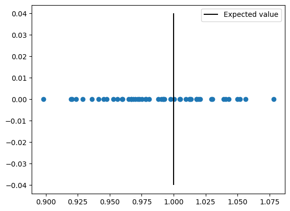
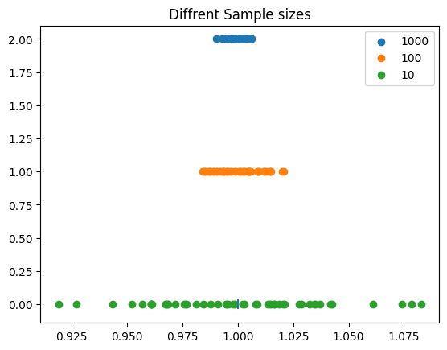

ביחידה 1 בנינו ארגז כלים: משתנה מקרי, תוחלת (איפה המרכז), שונות (כמה מתפזרים), והתפלגויות. עכשיו נשלוף אותו לשימוש הראשון והחשוב ביותר שלו.
זוכר את "המשחק של הסטטיסטיקה" מהפתיחה של יחידה 1? יש אמת באוכלוסייה שאיננו רואים, ויש מדגם שכן. היחידה הזאת עונה על השאלה הראשונה במשחק: איך מנחשים את האמת מהמדגם — ואיך יודעים אם הניחוש שלנו טוב?
💡 הרעיון המרכזי של כל היחידה — במשפט אחד
הניחוש שלנו (ה"אומד") מחושב ממדגם אקראי, ולכן הוא עצמו משתנה מקרי — יש לו תוחלת ושונות בדיוק כמו למשתנים של יחידה 1. ברגע שמבינים את זה, כל היחידה היא בסך הכל לשאול: איפה התוחלת שלו יושבת (הטיה) וכמה הוא מתפזר (שונות).
2.1 מה זה אומד ולמה צריך אותו
רוצים לדעת את הגובה הממוצע של נשים בישראל? אי אפשר למדוד את כולן. רוצים לחזות בחירות? אי אפשר לשאול את כל המצביעים. תמיד יש לנו רק מדגם — חלק קטן מהאוכלוסייה — וממנו צריך להסיק על השלם.
📐 אומד — ההגדרה
$$\hat{\theta}=g(X_1,X_2,\dots,X_n)$$
פענוח הסימנים: \(\theta\) (תטא) הוא הפרמטר — האמת הלא-ידועה באוכלוסייה (למשל: התוחלת האמיתית). ה"כובע" מעליו — \(\hat{\theta}\) — מסמן "האומדן שלנו ל-": מספר שמחושב מהמדגם. ו-\(g\) היא פשוט פונקציה כלשהי — מתכון שלוקח את \(n\) התצפיות \(X_1,\dots,X_n\) ומחזיר מספר אחד.
הדוגמה הכי חשובה: ממוצע המדגם כאומד לתוחלת:
📐 האומד לתוחלת
$$\hat{\mu}=\bar{X}=\frac{\sum_{i=1}^{n}X_i}{n}$$
פענוח: \(\mu\) — התוחלת האמיתית (לא ידועה); \(\bar{X}\) ("X בר") — ממוצע המדגם; המתכון: לחבר את כל התצפיות ולחלק במספרן.
✏️ דוגמה מהשיעור — מפעל עמודי פלדה
עמודים אמורים לצאת באורך מטר אחד בדיוק. דגמו 10 עמודים: [0.99, 1.02, 1.2, 0.81, 0.97, 1.01, 1.02, 1.1, 0.95, 0.999]
הממוצע: \(\bar{X}=1.0069\) — זה האומד שלנו לאורך הממוצע האמיתי של כל העמודים במפעל. קרוב למטר, אבל לא בדיוק — וזה בסדר גמור, כפי שנראה מיד.
⚠️ ההבחנה הכי חשובה ביחידה: פרמטר מול אומד
\(\theta\) (בלי כובע) הוא מספר קבוע — האמת. הוא לא זז, פשוט לא מכירים אותו.
\(\hat{\theta}\) (עם כובע) הוא משתנה מקרי — תדגום 10 עמודים אחרים, תקבל ממוצע אחר. כל ההמשך של היחידה נשען על ההבחנה הזאת.
🔎 בונוס: חוק המספרים הגדולים — למה ניחושים מהמדגם בכלל עובדים?
בשיעור הריצו סימולציה: הטלת קובייה הוגנת 100 מיליון פעמים (np.random.randint(1,7)) וחישוב הממוצע. התוצאה: 3.49997 — כמעט בדיוק התוחלת התיאורטית 3.5 (זוכר איך מחשבים? \(E[X]=\sum x P(x)\) מסעיף 1.3). זה "חוק המספרים הגדולים": ככל שהמדגם גדל, הממוצע מתכנס לתוחלת האמיתית. זו הערובה הבסיסית לכך שאמידה ממדגם היא רעיון שפוי בכלל.
בדוק את עצמך
מי מהבאים הוא אומד?
💬 אומד הוא מספר שמחושב מהמדגם כדי להעריך פרמטר. \(\mu\) ו-\(\sigma^2\) הם פרמטרים — האמיתות הקבועות והלא-ידועות שאותן מנסים לאמוד. סימן זיהוי מהיר: אם יש כובע (\(\hat{\;}\)) או שזה חישוב ממדגם — זה אומד.
2.2 הטיה (Bias) — האם האומד מכוון למרכז?
אמרנו שהאומד הוא משתנה מקרי — כל מדגם נותן ערך אחר. אז איך שופטים אם הוא "טוב"? השאלה הראשונה: לאן הוא מכוון בממוצע?
📐 הטיה
$$Bias(\hat{\theta})=E[\hat{\theta}]-\theta$$
פענוח: \(E[\hat{\theta}]\) — התוחלת של האומד: הממוצע של אינסוף חזרות על הניסוי, כל פעם עם מדגם חדש. \(\theta\) — האמת. ההפרש ביניהם = בכמה האומד מפספס באופן שיטתי. אם ההפרש הוא 0, האומד נקרא חסר הטיה.
💡 אינטואיציה — הקלע
תחשוב על קלע שיורה למטרה. הטיה = הכוונת שלו עקומה: גם אחרי אלף יריות, מרכז הפגיעות שלו יושב שמאלה מהמרכז. זו טעות שיטתית — היא לא מתמצעת החוצה כשיורים עוד. אומד חסר הטיה = כוונת ישרה: יריות בודדות מפספסות, אבל מרכז הפגיעות בדיוק על המטרה.
הוכחה שהממוצע הוא אומד חסר הטיה
נחשב את \(E[\bar{X}]\) — לאן הממוצע מכוון בממוצע? הכלי היחיד שנצטרך הוא ליניאריות התוחלת:
📐 ליניאריות התוחלת — כלי העבודה להוכחות
$$E[aX]=aE[X] \qquad E[X_1+X_2]=E[X_1]+E[X_2]$$
במילים: תוחלת של סכום = סכום התוחלות, וקבוע (\(a\)) מותר להוציא החוצה. תמיד, בלי תנאים.
ועכשיו ההוכחה — שלוש שורות:
📐 ההוכחה
$$E[\bar{X}]=E\left[\frac{X_1+\cdots+X_n}{n}\right]=\frac{1}{n}\left(E[X_1]+\cdots+E[X_n]\right)=\frac{1}{n}\cdot n\mu=\mu$$
פענוח הצעדים: הוצאנו את הקבוע \(\frac{1}{n}\) החוצה, פירקנו את תוחלת הסכום לסכום תוחלות, וכל תצפית \(X_i\) הגיעה מהאוכלוסייה ולכן \(E[X_i]=\mu\). קיבלנו \(E[\bar{X}]=\mu\) ⇐ הטיה 0 ⇐ הממוצע חסר הטיה. 🎉
✏️ רואים את זה בסימולציה (מהשיעור)
חזרו 500,000 פעמים על "דגום 10 ערכים מהתפלגות אחידה עם תוחלת 1, חשב ממוצע". ממוצע כל הממוצעים: 1.000043 — כמעט בדיוק האמת. חוסר ההטיה עובד בשטח.

מהשיעור: 50 ממוצעים של מדגמים (n=10 כל אחד) מסומנים כנקודות, והקו השחור = הערך האמיתי 1. שים לב: אף ממוצע בודד לא פוגע בול, אבל הפיזור מאוזן משני צידי הקו — אין נטייה שיטתית לצד. זו בדיוק המשמעות הוויזואלית של "חסר הטיה".
⚠️ "חסר הטיה" ≠ "תמיד צודק"
אומד חסר הטיה עדיין מפספס בכל מדגם בודד (ראינו: 1.0069 ולא 1). ההבטחה היא רק שהפספוסים מאוזנים — אין נטייה קבועה למעלה או למטה. אל תתבלבל בין "הטיה 0" ל"שגיאה 0".
בדוק את עצמך
לאומד מסוים מצאנו ש-\(E[\hat{\theta}]=\theta+0.1\). מה ההטיה שלו?
💬 לפי ההגדרה: \(Bias=E[\hat{\theta}]-\theta=(\theta+0.1)-\theta=0.1\). האומד "יורה גבוה" ב-0.1 בממוצע. והשונות? היא מדד נפרד לגמרי — נפגוש אותה בסעיף הבא, ואת השילוב של שניהם ב-MSE.
2.3 שונות של אומד — כמה הניחוש "קופץ"?
הכוונת ישרה — מעולה. אבל קלע עם יד רועדת עדיין מפזר יריות לכל עבר. המדד השני לטיב אומד: כמה הוא משתנה ממדגם למדגם? עבור ממוצע המדגם יש תשובה מדויקת ויפהפייה:
📐 שונות של ממוצע המדגם
$$Var(\bar{X})=\frac{1}{n^2}\cdot n\sigma^2=\frac{\sigma^2}{n}$$
פענוח: \(\sigma^2\) — השונות של האוכלוסייה (כמה תצפית בודדת רועשת); \(n\) — גודל המדגם. הרעיון בגזירה: שונות של סכום \(n\) תצפיות בלתי תלויות היא \(n\sigma^2\), וכשמחלקים משתנה בקבוע \(n\) השונות מתחלקת ב-\(n^2\) (הקבוע יוצא בריבוע!) — ביחד: \(\sigma^2/n\).
💡 מה הנוסחה הזאת אומרת בפועל
המכנה \(n\) הוא כל הסיפור: ככל שהמדגם גדול יותר — האומד יציב יותר. רעשים מקריים של תצפיות בודדות מתקזזים זה עם זה בממוצע. פי 4 תצפיות ⇐ רבע מהשונות ⇐ חצי מסטיית התקן. זה המנוע מאחורי "מדגם גדול = אמין יותר", וזאת גם הסיבה שחוק המספרים הגדולים עובד: כש-\(n\to\infty\) השונות שואפת ל-0 והאומד "ננעל" על האמת.

מהשיעור: כל נקודה היא ממוצע של מדגם אחד. שורה תחתונה (ירוק): מדגמים של n=10 — מפוזרים רחוק מ-1. אמצע (כתום): n=100 — צפוף יותר. למעלה (כחול): n=1000 — צמודים ל-1. למה זה נראה ככה? כי הפיזור הוא \(\sigma/\sqrt{n}\): פי 100 תצפיות = פי 10 פחות פיזור.
🎯 שאלה 5 מהמבחן לדוגמא — בדיוק הגרף הזה!
במבחן מוצג גרף כמעט זהה: דגימות של שני אומדים, שניהם ממוצעים, אחד בכחול (מרוכז צפוף סביב 1.0) ואחד בכתום (מפוזר רחב). נסה לענות למטה.
🎯 שאלה 5 מהמבחן לדוגמא
להלן דגימות של שני אומדים. בשני המקרים האומד הוא הממוצע, רק עם מספר שונה של דגימות. הכחול מרוכז צפוף סביב 1.0, הכתום מפוזר רחב. איזה אומד משתמש ביותר תצפיות?
💬 \(Var(\bar{X})=\sigma^2/n\) — יותר תצפיות ⇐ שונות קטנה יותר ⇐ הנקודות צפופות. הכחול הצפוף = ה-n הגדול. בגרף מהשיעור למעלה זה בדיוק ההבדל בין השורה של n=1000 לשורה של n=10.
בדוק את עצמך
הגדלנו את המדגם פי 4 (מ-25 ל-100 תצפיות). מה קורה לסטיית התקן של \(\bar{X}\)?
💬 השונות קטנה פי 4 (כי \(Var=\sigma^2/n\)), אבל סטיית התקן היא השורש — אז היא קטנה רק פי \(\sqrt{4}=2\). מסקנה מעשית חשובה: כדי להכפיל דיוק צריך פי 4 דאטה. דיוק עולה ביוקר.
2.4 MSE — המדד שמאחד הכל
אז יש לנו שני מדדים: הטיה (כוונת עקומה?) ושונות (יד רועדת?). אבל מה עושים כשצריך להשוות שני אומדים — אחד עם קצת הטיה ומעט שונות, ואחד חסר הטיה אבל רועש? צריך מספר אחד שמשקלל את שניהם:
📐 שגיאה ריבועית ממוצעת (MSE)
$$MSE(\hat{\theta})=E\big[(\hat{\theta}-\theta)^2\big]=Var(\hat{\theta})+Bias(\hat{\theta})^2$$
פענוח: צד שמאל — ההגדרה: "כמה רחוק האומד מהאמת, בריבוע, בממוצע" (ריבוע — שוב הטריק מיחידה 1: מוחק את הכיוון של הפספוס). צד ימין — הפירוק הקסום: השגיאה הכוללת מתפרקת בדיוק לשונות ועוד ריבוע ההטיה. שני החטאים של הקלע, במספר אחד.
⚠️ ההטיה נכנסת בריבוע!
בחישוב MSE לא מחברים את ההטיה כמו שהיא — מעלים אותה בריבוע קודם. הטיה של \(-0.9\) תורמת \(0.81\), הטיה של \(0.5\) תורמת רק \(0.25\). גם הסימן נעלם (הטיה שלילית לא "מקזזת" שונות). זו המלכודת המרכזית בשאלות מהסוג הזה.
🎯 שאלה 4 מהמבחן לדוגמא — נפתור אותה יחד
נתונה טבלה של אומדים לפרמטר \(\theta\), ומבקשים לדרג אותם מהטוב לרע:
אומד
Bias
שונות
MSE = שונות + Bias²
אומד 1
0
2
\(2+0^2=2.00\)
אומד 2
\(-0.9\)
1
\(1+0.81=1.81\)
אומד 3
0.5
1.5
\(1.5+0.25=1.75\)
הדירוג מהטוב לרע: אומד 3 (1.75) ← אומד 2 (1.81) ← אומד 1 (2.00).
שים לב לפואנטה: האומד חסר ההטיה דורג אחרון, כי השונות הענקית שלו הרסה לו את ה-MSE!
🎯 וריאציה על שאלה 4 — בדוק שהבנת
אומד A: הטיה 0, שונות 3. אומד B: הטיה \(-1\), שונות 1.5. מי עדיף לפי MSE?
2.5 ההפתעה: שלושה אומדים לשונות — ומי באמת הכי טוב
עכשיו נאמוד את \(\sigma^2\) (שונות האוכלוסייה) מהמדגם. נסמן את סכום ריבועי הסטיות — תזכור את הקיצור SS (Sum of Squares), הוא יככב ב-ANOVA:
📐 שלושה מועמדים לאמידת השונות
$$SS=\sum_{i=1}^{n}(X_i-\bar{X})^2 \qquad\Rightarrow\qquad \hat{\sigma}^2=\frac{SS}{n-1},\quad S^2=\frac{SS}{n},\quad \tilde{\sigma}^2=\frac{SS}{n+1}$$
פענוח: אותו מונה בדיוק — ההבדל היחיד הוא המכנה: \(n-1\), \(n\) או \(n+1\). מי צודק?
זוכר מיחידה 1 (הקופסה של "למה סכום הסטיות חייב לצאת 0")? הסטיות נמדדות סביב \(\bar{X}\) ולכן כבולות באילוץ אחד — יש רק \(n-1\) חתיכות מידע חופשיות. התוצאה: המכנה \(n-1\) הוא בדיוק זה שנותן אומד חסר הטיה: \(E[\hat{\sigma}^2]=\sigma^2\). המכנה \(n\) מחלק ביותר מדי חלקים ולכן מקטין שיטתית — הטיה שלילית. אז \(n-1\) מנצח? בשיעור בדקו את זה במונטה-קרלו (200,000 מדגמים מהתפלגות נורמלית, n=10, שונות אמיתית \(\sigma^2=1\)):
מכנה
הטיה
MSE (תיאוריה)
MSE (סימולציה)
\(n-1=9\)
חסר הטיה ✓
0.2222
0.2211
\(n=10\)
מוטה מטה
0.1900
0.1892
\(n+1=11\)
מוטה עוד יותר
0.1818 🏆
0.1813 🏆
💡 הלקח הגדול של היחידה
האומד הכי מוטה מבין השלושה ניצח ב-MSE! איך? מכנה גדול יותר מכווץ את כל האומדנים — זה מוסיף קצת הטיה, אבל מרגיע את השונות יותר ממה שההטיה עולה. זה בדיוק ה-trade-off מהשאלה של המבחן: לפעמים שווה לקבל כוונת מעט עקומה תמורת יד יציבה בהרבה. אז למה כולם בכל זאת עובדים עם \(n-1\)? מסורת + חוסר הטיה נוח תיאורטית + בפועל ההבדל זניח כשהמדגם גדול. אבל עכשיו אתה יודע ש"חסר הטיה" זה לא סוף הסיפור.
🔎 בונוס: מאיפה מגיעים המספרים בעמודת התיאוריה?
למדגם מהתפלגות נורמלית (כמו בסימולציה מהשיעור — ההנחה חשובה, כי היא זו שמכניסה את χ² לתמונה), לאומד מהצורה \(SS/c\) (עם \(c\) כלשהו במכנה) יש נוסחה סגורה. נסמן \(k=n-1\) (דרגות החופש של SS — כמו ביחידה 1!). אז:
פענוח: האיבר הראשון הוא השונות (שם מופיע ה-\(2k\) — זו השונות של \(\chi^2_k\) מיחידה 1 בפעולה!), והשני הוא ריבוע ההטיה. הצבה עם \(k=9\), \(\sigma=1\): עבור \(c=9\): \(18/81+0=0.2222\); עבור \(c=10\): \(18/100+0.01=0.19\); עבור \(c=11\): \(18/121+(9/11-1)^2=0.1818\). תחת הנחת הנורמליות, המינימום המדויק יוצא תמיד ב-\(c=n+1\). שים לב איך יחידה 1 (χ², דרגות חופש) פתאום עובדת בשבילנו.
בדוק את עצמך
איזה מכנה נותן אומד חסר הטיה לשונות, ואיזה נותן MSE מינימלי?
💬 \(n-1\) מתקן את "דרגת החופש שנאבדה" ונותן חוסר הטיה; \(n+1\) מכווץ חזק יותר, סופג קצת הטיה אבל חוסך הרבה שונות — ומשיג את ה-MSE הקטן ביותר. שני עקרונות שונים, שתי תשובות שונות.
פענוח שורת הפרופורציה: בברנולי כל תצפית היא 0 או 1 (תומך/לא תומך), אז "ממוצע התצפיות" הוא בדיוק אחוז האחדים — האומד הטבעי להסתברות \(p\). זה בדיוק מה שסוקרי בחירות עושים.